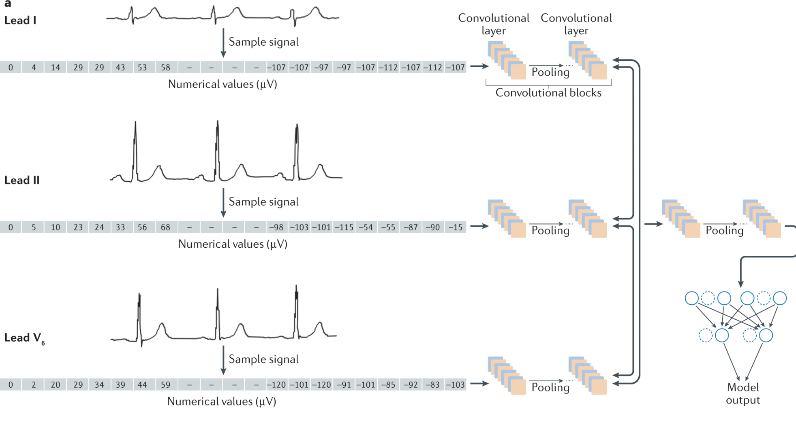
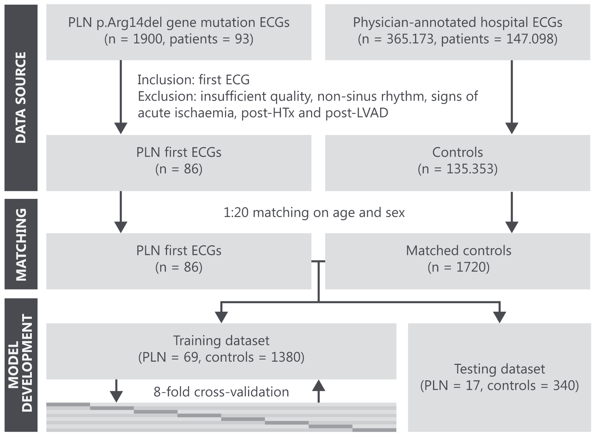
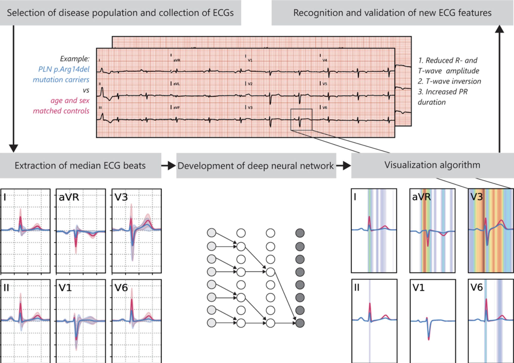

gantt
dateFormat M/YY
axisFormat %b-%Y
excludes weekends
section Intake
MUSE ECG to XML :done, muse, 05/2023, 07/2023
XML ECG to WFDB :done, wfdb, 04/2023, 90d
Cluster hosting of data :done, acer, 06/2023, 60d
Import CCTS data :done, 05/2023, 90d
section Data tidying
Sinus rhythm parameters :done, nsr, 07/2023, 30d
AF rhythm parameters :paf, 07/2023, 180d
Clinical visits and diagnoses :visits, 07/2023, 120d
Labs and lab changes :labs, after visits, 30d
Clinical medication changes :meds, after labs, 30d
Rhythm/control strategies :rhythm, after meds, 60d
EPS data extraction :eps, 01/2024, 90d
NLP for notes :nlp, after visits, 180d
section Analysis
Cross-sectional ECG :clusters, after nsr, 30d
ECG trajectories :delta, after paf, 30d
Cross-sectional clincal :cross, after rhythm, 30d
Clinical trajectories :after tidy, 60d
section Production
CCTS/CBCD IRB :done, irb, 04/2023, 30d
ECG/AF Clusters :milestone, ecg, after delta, 7d
Phenotype AF :milestone, phenotype, after rhythm, 7d
Phenotyping AF
Project Page
Proposal
This proposal describes a year-long research prospecta covering the academic 2023-2024 year. The proposal builds on previous skills and background for a focused project that should serve as both preliminary data and support for a future K23 award. The focus of the proposal is on phenotyping of paroxysmal AF alone, however additional data will likely be generated to support the K23 application via preliminary data.
Aim 1: Identify electrocardiographic phenotypes of paroxysmal AF with structurally normal atria.
This proposal specifies an approach to identify clinical phenotypes of paroxysmal AF that have a higher or increased risk of progression to a more persistent or treatment-resistant class based on burden of disease, electrical and structural remodeling, and the development of both atrial and ventricular cardiomyopathy.
Question:
- Can we identify which patients will progress more rapidly to persistent AF, or develop complications of AF?
- Are there electrocardiographic or clinical parameters that predict electrical and structural remodeling?
- Can the duration or chronicity of AF be predicted based off of ECG parameters?
Hypothesis:
The longitudinal trajectory of pAF can be predicted by subphenotypes of paroxysmal AF based on electrical, clinical, and structural cardiac properties.
Proposal:
- Identify clusters of paroxysmal AF based on cross-sectional electrical properties in both sinus rhythm and in atrial fibrillation.
- Assess the trajectory of AF based on progression of the disease, including burden, severity, and complications (from CVA to both atrial and ventricular cardiomyopathy).
- Generate a polygenic risk score for (A) the separate phenotypes of paroxysmal AF and (B) the risk of rapidity of progression of paroxysmal AF
- Evaluate disease-specific ECG features for specific pathogenic/likely pathogenic mutants (e.g. TTN variants) within the AF population.
Background
Phenotyping approaches
Paroxysmal AF contains a broad spectrum of disease, regardless of burden, frequency, hemodynamic or vascular complications, or etiology. Several attempts have been made at pursuing more salient models, however they combine both paroxysmal and persistent AF into a binary diagnosis. Two recent studies have documented 4 potential clusters may exist (Pastori et al. 2020; Vitolo et al. 2021):
- Younger, lower comorbidities
- High CV risk factors
- High CV comorbidities
- High rates of non-CV comorbidities (e.g. cancer)
Wineinger et al. (2019) showed that in terms of duration and episodes of AF, there may be a staccato (short, frequent episodes) versus legato (long, infrequent) patterns to AF, however unknown about underlying clinical relevance.
Genotyping approaches
There are an extensive number of studies on genetic contributions to AF. Ritchie et al. (2012) showed the association of the 4q25 region with familial AF. In a smaller study, Husser et al. (2009) showed that in certain populations of lone AF, the F-wave fibrillatory rate was determined by the KCNE1 gene. Kavousi and Ellinor (2023) notes that polygenic risk scores (PRS) may be equally important as monogenic risk scores, with similar effect sizes as seen in the UK Biobank (~3 fold increase in incident and prevalent AF risk). However, this data is limited to just European ancestry, was only case-control and with only ~1500 cases (Choi et al. 2020).

The ECG is highly relevant as a corrolary to genetic variants, as seen in Figure 1, and may provide insight into clinical phenotypes that may otherwise go undetected. For example, Wang et al. (2023) showed that in the UK Biobank, ECG-predicted risk of AF in a complimentary fashion to clinical risk while also helping to identify novel genetic variants. It remains unknown however if certain genetic variants increase the rate of progression of paroxysmal AF or how they may lead to structural and electrical remodeling.
Data
Data sources
The data that is currently available to answer this is derived from three sources:
- UIC Multi-Ethnic AF Registry: ~1800 patients with various classes of AF that have contributed blood sampling for genetic analysis
- Clinical Data Warehouse: collected by the CCTS, houses Cerner and EPIC charts from 2010 onwards, including clinical notes, procedure notes, diagnoses, vitals, medications
- MUSE: ECGs from ~2000s to today with full digital/raw signal (10 seconds x 8 leads)
Key variables
The key variables that will be used are a combination of clinical, electrical, imaging that will allow for creation of multiple dimensions for analysis.
Electrocardiography
Sinus
- P-wave indices: voltage, AUC, duration, dispersion, terminal forces
- Global parameters: PR interval, P/R amplitude ratio
- Rate: high-frequency HRV, HR
AF
- Conduction properties: ventricular response, shortest/longest RR intervals
- Atrial parameters: dominant frequency (Fourier multi-transform), F-wave relative voltage + ∆ voltage over time
Clinical
- Age, Sex, Race
- Weight + ∆ weight over time
- Comorbidities (HTN, DM, HLD, CHF, CAD)
- CHADS2VAS2C score
- ADHF and h/o CHF
- Anti-arrhythmic intensification (AAD, BB uptitration, cardioversion, ablation)
- Atrial arrhythmias + recurrence + burden of AF over time
- Blood pressure + ∆ over time
- HR and responsiveness of HR over time
Echocardiography
- Volumes: LA, RA, LV, LVIDD
- Pressures: RVSP, PA pressures
- Diastology: E/e’ ratio, A wave duration/velocity, A wave reversal
- Function: LVEF, RVEF, LA strain
Methods
General methods
The overall approach is inspired by the work of Nagamine et al. (2020) and Nagamine et al. (2022) to phenotype worsening heart failure. This is similar to how we will proceed with paroxysmal AF by identifying worsening or progression of the disease. There are major components of this work that will eventually come-together for analysis.
- Electrocardiography-based rhythm and morphology evaluation: capitalizes on arrhythmia-focused research while utilizing signal processing and ML-based clustering approaches
- Echocardiography and structural imaging assessments of cardiac function: low-level NLP in structured data parsing
- Clinical context including co-morbidities, vitals, medications, procedures: epidemiology-focused contextualization of patient attributes/trajectories
- Changes in parameters with time: survival analyses and recurrent event analyses (multi-state models)
- Common and rare genetic variants: provides an approach to learn and expand on computational genomics to generate a polygenic risk score
This project will have two major phases: 1) create clusters or phenotypes of paroxysmal AF based on both ECG and clinical features, 2) evaluate trajectory of disease and rapidity of increase in burden. The outcome is the trajectory of paroxysmal AF, which will be defined by the following concepts:
- Increase in burden of AF by CIED or cardiac telemetry device
- Longest measured duration of AF
- Need for intensification of medication therapy, e.g. initiation of class I or class III medications
- Repeat ECG x 2-3 in AF consistently
- Invasive rhythm control strategies, including electrical cardioversion and ablation
- Reduction on LVEF or dilation of LV cavity
- Increase in LA volumes
Detailed approach
Electrocardiogram processing
- Intake of all clinical data through CCTS as a superset of information on the patients within the AF Registry. This includes 10+ years of notes, procedures, medications, vitals, etc. Intake of all imaging data, including cardiac MRI and echocardiograms.
- Intake of all ECG data, through the MUSE export to XML option, and converting the data into a WFDB-compatible format with data and header files.
- Annotation and pre-processing of ECG data, including selection, removing baseline wander, high and low band-pass filtering, interpolation, removal of artifact/noise, and scaling/centering data.
- Machine learning approach to segment morphology components and determine rhythm features (e.g. P-wave indices, F-wave dominant frequencies), as seen in Figure 2

Clinical data processing
- Generation of cross-sectional data using visit data, including ICD-9 and ICD-10 codes for diagnoses, encounters/discharges, CPT codes for procedures, and active medications, vital signs, and laboratory values.
- Supplementation of cross-sectional data using study results, including echocardiography, device interrogations, procedure text (including ablations and cardioversions).
- Creation of longitudinal data using changes in parameters over time, including heart rate & blood pressure, medication intensification, echocardiography parameters, recurrence of arrhythmias, changes in disease burden.
- Evaluation of unstructured text, as in Figure 3, using a natural language processing (NLP) approach

Clustering analysis
- Initially, clustering will be performed similar to Figure 4, however this will primarily be focused on cross-sectional data and ECG-data. Future analyses will include the unstructured text data.
- After general clusters are determined, can assess trajectory of AF. The trajectories can then feedback to generate phenotypical categories. Deep-learning approach will be used to identifying features associated with higher-risk phenotypes of paroxysmal AF.

Genetic variant analysis
- Genetic variant data will be incorporated by using evaluation of common common variants through polygenic risk score.
- Monogenic analysis will be performed as described by van de Leur et al. (2021) using a combination of case/control for specific cardiomyopathy/arrhythmia genes and the corresponding ECG data. The number of samples can be surprisingly low, as seen in Figure 5, to be adequately powered to differentiate phenotypes (Figure 6).


Results
- Clusters of ECG and clinical parameters that help identify phenotypes of paroxysmal AF, similar to Nagamine et al. (2022) (Figure 4).
- Hazard/risk between clusters for worsening/progression of paroxysmal AF
- Polygenic risk score to predict progression of paroxysmal AL
- ECG features that correlate with pathogenic/likely pathogenic variants in cardiomyopathy/arrhythmia genes (e.g. TTN, 4q25)
Timeline
References
Research - Phenotyping AF Research - Phenotyping AF Research - Phenotyping AF Research Project Page Project Page
Choi, Seung Hoan, Sean J. Jurgens, Lu-Chen Weng, James P. Pirruccello, Carolina Roselli, Mark Chaffin, Christina J.-Y. Lee, et al. 2020. “Monogenic and Polygenic Contributions to Atrial Fibrillation Risk.” Circulation Research 126 (2): 200–209. https://doi.org/10.1161/CIRCRESAHA.119.315686.
Husser, Daniela, Martin Stridh, Leif Sörnmo, Dan M. Roden, Dawood Darbar, and Andreas Bollmann. 2009. “A Genotype-Dependent Intermediate ECG Phenotype in Patients With Persistent Lone Atrial Fibrillation.” Circulation: Arrhythmia and Electrophysiology 2 (1): 24–28. https://doi.org/10.1161/CIRCEP.108.799098.
Kavousi, Maryam, and Patrick T. Ellinor. 2023. “Polygenic Risk Scores for Prediction of Atrial Fibrillation.” Netherlands Heart Journal 31 (1): 1–2. https://doi.org/10.1007/s12471-022-01755-y.
Leur, Rutger R. van de, Karim Taha, Max N. Bos, Jeroen F. van der Heijden, Deepak Gupta, Maarten J. Cramer, Rutger J. Hassink, et al. 2021. “Discovering and Visualizing Disease-Specific Electrocardiogram Features Using Deep Learning.” Circulation: Arrhythmia and Electrophysiology 14 (2): e009056. https://doi.org/10.1161/CIRCEP.120.009056.
Nagamine, Tasha, Brian Gillette, John Kahoun, Rolf Burghaus, Jörg Lippert, and Mayur Saxena. 2022. “Data-Driven Identification of Heart Failure Disease States and Progression Pathways Using Electronic Health Records.” Scientific Reports 12 (1, 1): 17871. https://doi.org/10.1038/s41598-022-22398-4.
Nagamine, Tasha, Brian Gillette, Alexey Pakhomov, John Kahoun, Hannah Mayer, Rolf Burghaus, Jörg Lippert, and Mayur Saxena. 2020. “Multiscale Classification of Heart Failure Phenotypes by Unsupervised Clustering of Unstructured Electronic Medical Record Data.” Scientific Reports 10 (1, 1): 21340. https://doi.org/10.1038/s41598-020-77286-6.
Pastori, D, E Antonucci, A Milanese, F Violi, P Pignatelli, G Palareti, and A Farcomeni. 2020. “Clinical Phenotypes of Atrial Fibrillation and Risk of Mortality: A Cluster Analysis.” European Heart Journal 41 (November). https://doi.org/10.1093/ehjci/ehaa946.2893.
Ritchie, Marylyn D., Shane Rowan, Gayle Kucera, Tanya Stubblefield, Marcia Blair, Shannon Carter, Dan M. Roden, and Dawood Darbar. 2012. “Chromosome 4q25 Variants Are Genetic Modifiers of Rare Ion Channel Mutations Associated with Familial Atrial Fibrillation.” Journal of the American College of Cardiology 60 (13): 1173–81. https://doi.org/10.1016/j.jacc.2012.04.030.
Siontis, Konstantinos C., Peter A. Noseworthy, Zachi I. Attia, and Paul A. Friedman. 2021. “Artificial Intelligence-Enhanced Electrocardiography in Cardiovascular Disease Management.” Nature Reviews Cardiology 18 (7, 7): 465–78. https://doi.org/10.1038/s41569-020-00503-2.
Verweij, Niek, Jan-Walter Benjamins, Michael P. Morley, Yordi J. Van De Vegte, Alexander Teumer, Teresa Trenkwalder, Wibke Reinhard, Thomas P. Cappola, and Pim Van Der Harst. 2020. “The Genetic Makeup of the Electrocardiogram.” Cell Systems 11 (3): 229–238.e5. https://doi.org/10.1016/j.cels.2020.08.005.
Vitolo, Marco, Marco Proietti, Alena Shantsila, Giuseppe Boriani, and Gregory Y. H. Lip. 2021. “Clinical Phenotype Classification of Atrial Fibrillation Patients Using Cluster Analysis and Associations with Trial-Adjudicated Outcomes.” Biomedicines 9 (7): 843. https://doi.org/10.3390/biomedicines9070843.
Wang, Xin, Shaan Khurshid, Seung Hoan Choi, Samuel Friedman, Lu-Chen Weng, Christopher Reeder, James P. Pirruccello, et al. 2023. “Genetic Susceptibility to Atrial Fibrillation Identified via Deep Learning of 12-Lead Electrocardiograms.” Circulation: Genomic and Precision Medicine 0 (0): e003808. https://doi.org/10.1161/CIRCGEN.122.003808.
Wineinger, Nathan E., Paddy M. Barrett, Yunyue Zhang, Ikram Irfanullah, Evan D. Muse, Steven R. Steinhubl, and Eric J. Topol. 2019. “Identification of Paroxysmal Atrial Fibrillation Subtypes in over 13,000 Individuals.” Heart Rhythm 16 (1): 26–30. https://doi.org/10.1016/j.hrthm.2018.08.012.